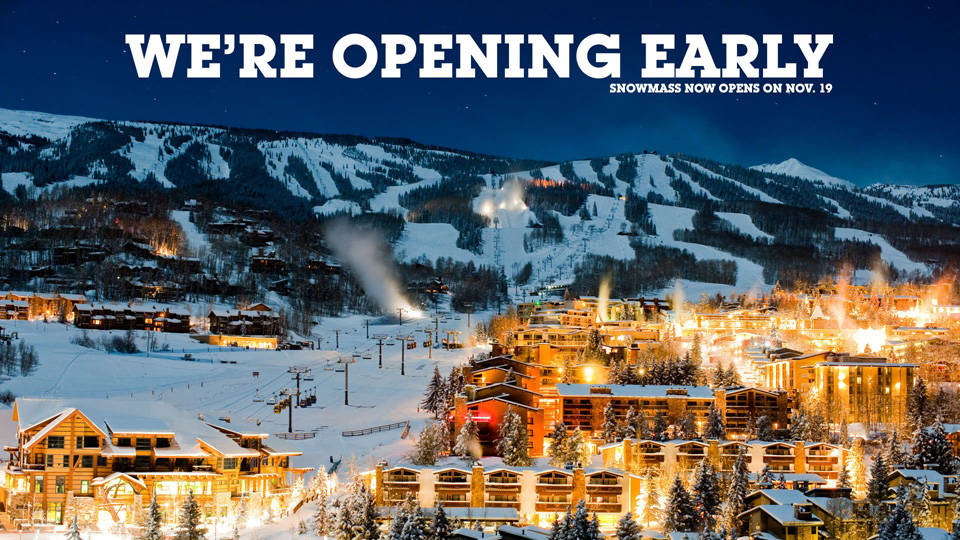

Snowmass Ski Resort Opens Early

Due to record amounts of early season snowfall, Snowmass Ski Resort will be opening a week early!
Approximately 80% of the resort will be opening, and we're planning to open the remaining 20% after the coming weekends storm cycle.
Thanks to the great temperatures we've also been able to produce about 50 million gallons worth of artificial snow, and will have three terrain parks opening as well!
We look forward to seeing you on the slopes this weekend; if you need accommodations or lift tickets, please head over to our
main website.